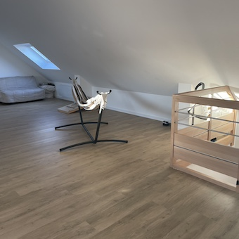
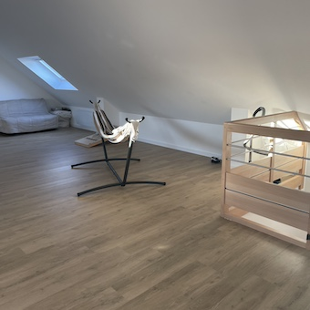
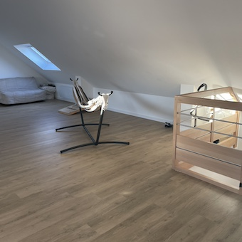
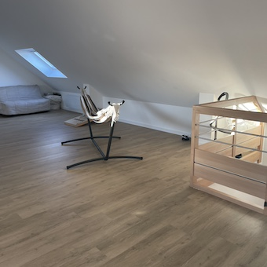

Un espace spacieux et polyvalent de 80 m², avec une hauteur de plafond impressionnante de 4 m, parfait pour accueillir petits et grands dans un cadre ludique et confortable :
• Literie : En plus des couchages pratiques avec un clic-clac et un BZ, le dortoir est équipé de 2 tables de chevet avec leurs lampes pour plus de confort.
• Espace de jeu : Pour s'amuser, le dortoir offre une table de ping-pong complète avec raquettes et balles, ainsi qu'un jeu de Cornhole pour varier les activités.
• Divertissements : Une télévision avec console Wii, des jeux et le module Wii Fit pour le plaisir des enfants et des adultes.
• Mobilier : Le dortoir est doté de 4 fauteuils confortables pour des moments de détente ou de lecture, et un hamac pour un moment de relaxation suspendu.
• Couchages supplémentaires : Deux lits parapluie avec leurs draps sont disponibles pour les plus jeunes.
• Ambiance : Trois grands velux avec stores occultants permettent de contrôler la luminosité et d’assurer un sommeil réparateur.
• Bibliothèque pour enfants : Des livres pour enfants sont à disposition, pour occuper les plus jeunes avant le coucher.
Ce dortoir est conçu pour offrir à la fois confort, détente et activités, afin que chacun puisse profiter pleinement de cet espace unique.